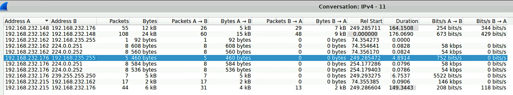

Scenario
Your organization's security team has detected a surge in suspicious network activity. There are concerns that LLMNR (Link-Local Multicast Name Resolution) and NBT-NS (NetBIOS Name Service) poisoning attacks may be occurring within your network. These attacks are known for exploiting these protocols to intercept network traffic and potentially compromise user credentials. Your task is to investigate the network logs and examine captured network traffic.
Tools Used
Wireshark
Question 1: Mistyped Query
Understanding the LLMNR and NBT-NS protocol is critical for the completion of this lab.
Link-Local Multicast Name Resolution (LLMNR) is a name resolution protocol used in local networks when DNS is unavailable. It allows devices to resolve names to IP addresses without a central DNS server. However, due to its lack of authentication, attackers can exploit LLMNR by responding with spoofed IP addresses, leading to traffic interception or credential theft.
The NetBIOS Name Service (NBT-NS) is an older name resolution protocol used in legacy Windows networks to map NetBIOS names to IP addresses. Like LLMNR, NBT-NS lacks authentication, making it vulnerable to spoofing attacks where malicious actors can redirect traffic or harvest credentials through network poisoning techniques.
In the scenario description we are told that LLMNR and NBT-NS is being targeted so by filtering for them we can find the mistyped query. Ex. ip.src==192.168.232.162 and nbns
Figure 1: Results of filtered search
Figure 2: Question 1
Question 2: Rogue IP Address
We know this is a poisoning attack so we should look for the mistyped query's response. The attacker is trying to intercept this response so we can find the IP of the rogue machine.
Figure 3: Response of mistyped query
Figure 4: Question 2
Question 3: Secondary Target
You can find all the interactions between each IP in statistics > conversations > IPv4. The rogue IP has only interacted with one other IP address.
Figure 5: Results of the statistics > conversations > IPv4
Figure 6: Question 3
Question 4: Comprimised Username
The SMB protocol integrates NT LAN Manager authentication which can contain information about the session. In our case the most relevant is the session setup response with contains the username. ip.dst==192.168.232.215 and smb2 isolates the rogue machine.
Figure 7: Results of SMB
Figure 8: Question 4
Question 5: Target's Hostname
Continuing in this packet you can find more information about the session. The target info field shows the DNS computer name and thus the hostname.
Figure 9: Target Info field
Figure 10: Question 5